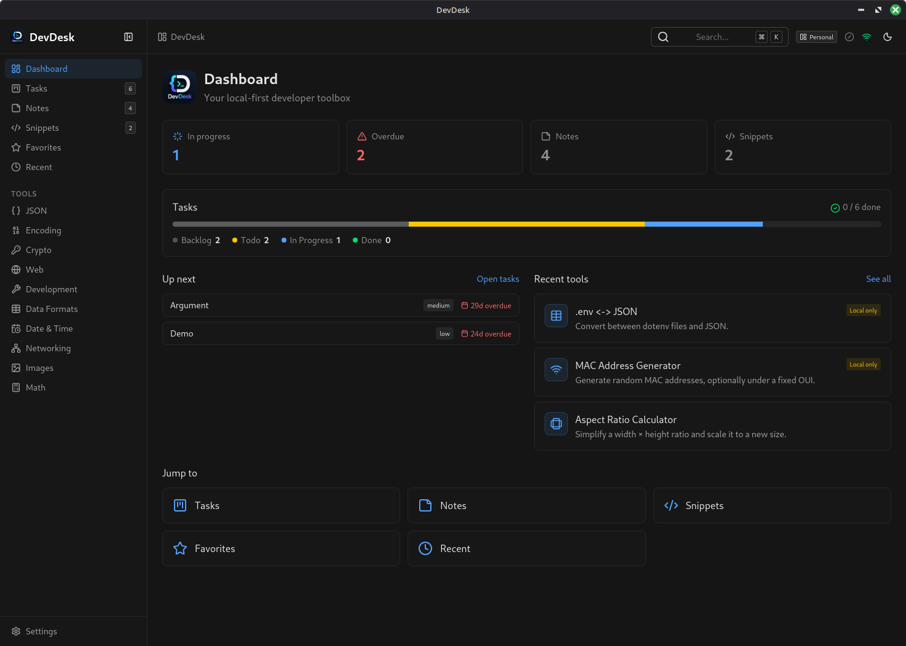

73 developer tools across 10 categories, in one native desktop app. Everything runs on your machine — no account, no telemetry, no network. Sync across devices only if you switch it on.
Looking up the latest release…

What's inside
Not a link farm of half-finished pages — every one of these is implemented, tested, and reachable from the command palette in two keystrokes. Here's how the toolbox is stocked.
In the agent era
Agents are extraordinary at the fuzzy work — reading code, drafting, reasoning. But a chunk of a developer's day is small, exact, repetitive operations on data you'd rather not hand to anyone. That work didn't disappear; it just got a worse default.
.env is now in a request log, a retention window, maybe a training set.NEVER_PERSIST — the platform refuses to write them to disk, let alone a network.Every tool is a pure function with a Zod schema in packages/tools — headless, importable, and already shaped like a tool definition. The same registry your app renders is the one an agent can call.
You don't prompt a calculator. Deterministic work belongs in deterministic code; save the model's attention — and your tokens — for problems that actually need judgement.
Open-source logic, unit tests per tool, no hidden service in the middle. When a value matters, you can read the twenty lines that produced it.
Features
The tools are the reason you open it. These are the reasons you keep it open.
Ctrl/Cmd + K — or F — searches every tool, note and snippet by name and keyword. Two keystrokes from anywhere to anything.
Tasks, notes and snippets belong to a workspace. The repository layer stamps and scopes them automatically, so client work and side projects never bleed into each other.
Every run is remembered — unless the tool's privacy level forbids it. Star the five you use daily; the rest surface by recency.
Markdown notes with a live preview and a syntax-highlighted snippet library, sitting next to the tools instead of in another app behind another login.
A kanban board with a dashboard view, because the thing you were doing before the JSON needed reformatting is worth writing down.
Export every table to a single JSON file and import it back. Your data leaves in a format you can read, whenever you like — no export queue, no email link.
A Hono worker on Cloudflare Workers + D1 that you deploy yourself in six commands. Last-write-wins by updatedAt, soft deletes as tombstones. Off until you configure it.
A Neutralino shell wraps the system webview, so the window is a real window on Windows, macOS and Linux — without shipping a browser to do it.
Light, dark, and system, applied instantly across every view — including this page, which is why the toggle up there works.
Vitest across tool logic, repositories (fake-indexeddb), services, the sync engine, Vue components, and the worker's routing and auth.
Tools are rendered generically from metadata, so adding one is logic plus a single catalog line — no bespoke component, no route to wire up.
Each tool carries keywords — search p99, guid, rwx or kebab and land on the right one without knowing its name.
Privacy levels
Privacy isn't a setting you have to go find — it's a property of the tool, enforced by the platform. History, favourites and sync all read it before writing a single byte.
Formatters, converters, calculators. Inputs are saved to local history so you can pick up where you left off, and they sync if sync is on.
Generated tokens, passwords, image conversions, .env files. Kept in this device's history — never queued for the sync server.
JWTs, TOTP seeds, private keys, certificates, cookies. supportsHistory is false, so the value lives in memory and dies with the view.
Optional sync
There is no DevDesk cloud to sign up for. Sync is off until you deploy the worker, and the worker is yours — one Cloudflare Worker plus one D1 database, comfortably inside the free tier. Six commands from a fresh clone to a running server.
# from the repo root — wrangler ships with the workspace
pnpm --filter @devdesk/sync-api exec wrangler login
pnpm --filter @devdesk/sync-api exec wrangler d1 create devdesk
# paste the printed database_id into apps/sync-api/wrangler.toml
pnpm --filter @devdesk/sync-api db:migrate:remote
pnpm --filter @devdesk/sync-api exec wrangler secret put JWT_SECRET
pnpm --filter @devdesk/sync-api deploymigrations/ and applies in one command.JWT_SECRET signs every login token — yours, never ours.DEFAULT_ADMIN_USERNAME / DEFAULT_ADMIN_PASSWORD secrets. It's read once, on the first login, and only if no admin exists./health — it answers {"ok":true} when the worker is live.https://, and every further account comes from Administration → Users — there's no self-serve signup.
Full walkthrough, including the wrangler.toml gotcha and custom domains, in the
README → Deploy your own sync API.
Architecture
Tools are pure functions with zero UI. The desktop app renders them generically, so adding one is logic plus a metadata entry — no bespoke component, no new page, no router surgery.
Data flows one way
Native access is isolated
Features stay decoupled
// packages/tools — logic, no DOM, no Vue
export const slugify: ToolPlugin = {
metadata: metaFor('slugify'),
schema,
run: (input) => toSlug(schema.parse(input).text),
}// packages/tools/src/catalog.ts
def({
id: 'slugify', name: 'Slugify',
category: 'web', path: 'slugify',
icon: 'link-2', keywords: ['slug', 'kebab'],
})Build from source
A pnpm workspace monorepo — Vue 3 + Vite front end, Neutralino shell, Cloudflare worker for the optional sync.
pnpm install
pnpm dev # sync API + desktop app
pnpm --filter @devdesk/desktop build # build web assets
pnpm --filter @devdesk/desktop neu:build # produce release binaries